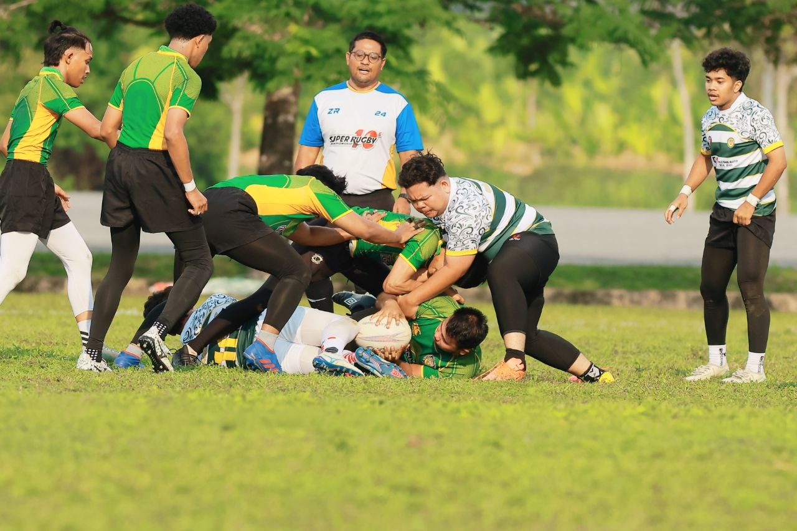
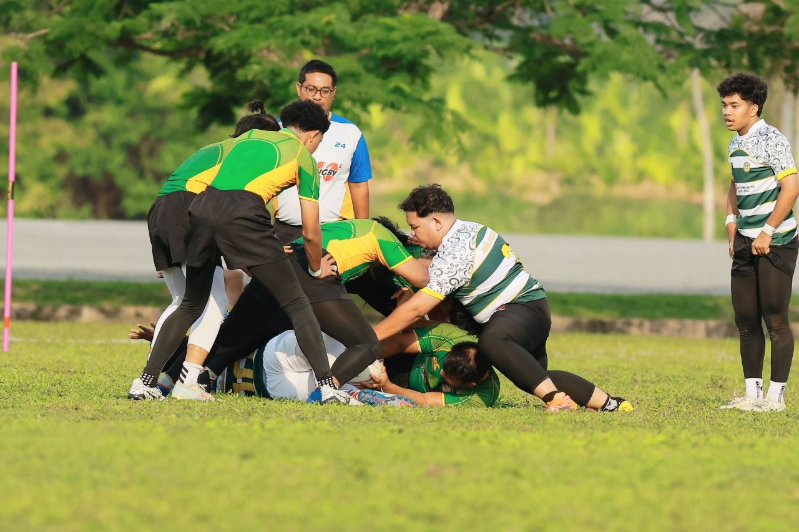

Full Name: Muhammad Danial Irfan Bin Azman
Age: 22 Years Old
Nationality: Malaysian
Gender: Male
Status: Student / Gamer / Developer
Languages: English & Malay
Hobbies: Gaming 🎮, Rugby 🏉, Music 🎧, Technology ⚡
Favorite Genre: Cyberpunk & Sci-Fi
Dream Career: Full Stack Developer
Location: Kedah, Malaysia
I am a passionate and creative student who enjoys learning new technology and improving my web development skills. I love creating futuristic cyberpunk-inspired websites with interactive effects and modern UI designs.
Besides programming, I enjoy playing rugby because it helps improve discipline, teamwork, and physical strength. I also enjoy gaming, listening to music, and exploring modern technology trends.
My ambition is to become a professional developer and design modern websites and applications that are attractive, interactive, and user-friendly.
Personality: Creative, Friendly, Hardworking
Strength: Fast Learner & Teamwork
Favorite Color: Neon Blue & Black
Favorite Sport: Rugby 🏉
Favorite Activity: Playing Games & Designing Websites
Life Motto: "Keep Learning, Keep Improving."

